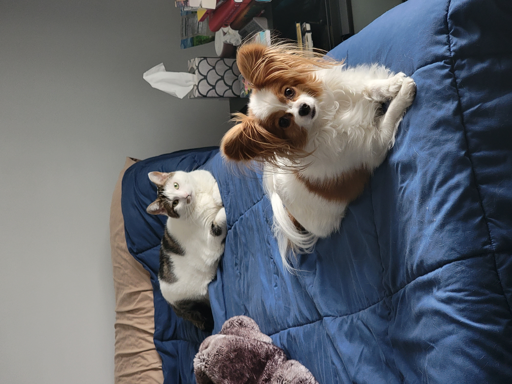

I'm a Utah native and I love the great outdoors (I know, super original). I've spent the last 8 years in the mortgage space and have reached a point where it's no longer fulfilling or challenging. I stumbled upon coding and am excited about pursuing it as a career.
When I'm not working, I like to spend my time cooking, traveling, gardening, hiking, on and in the water, and going to the theater for everything from concerts to ballet. I adore animals and have a dog, Gizmo, and a cat, Jelly Bean - they have a very comfortable life!
